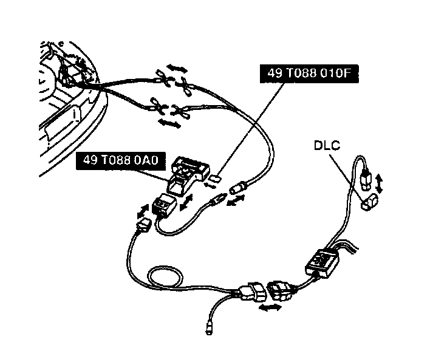
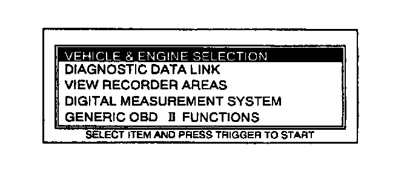
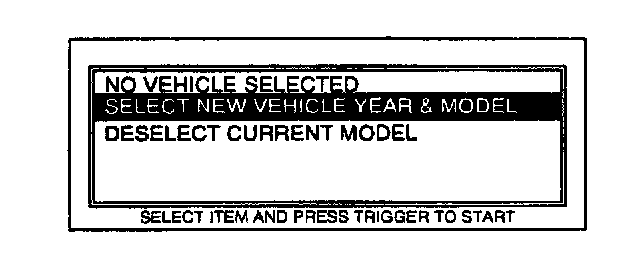
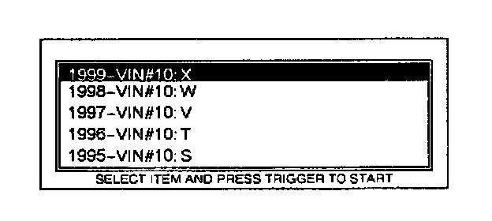
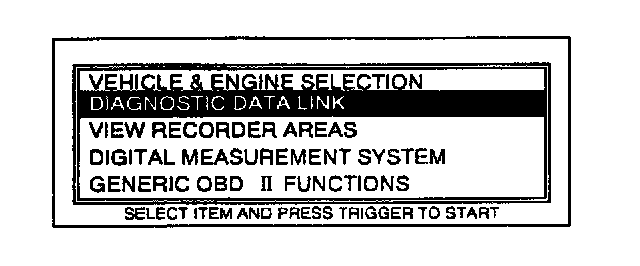
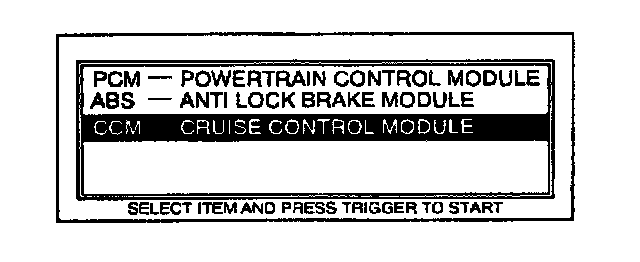
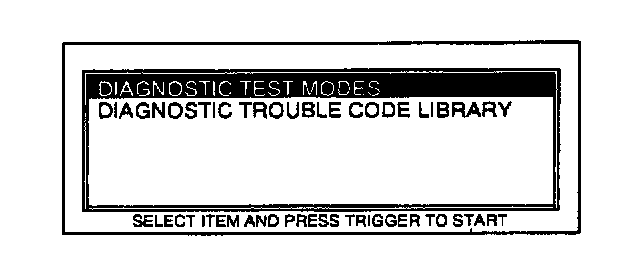
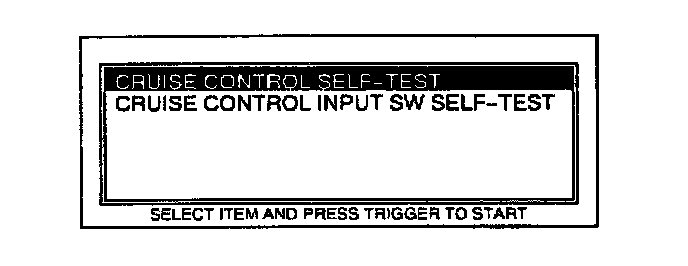
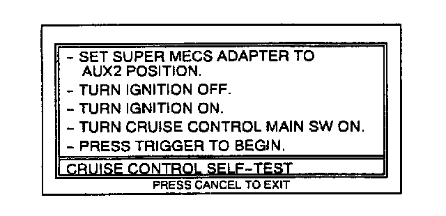

In Detection Mode
Inspection of Diagnostic Trouble Codes for Condition Detection ModeUsing the SST (NGS set) New generation star (NGS) tester hookup procedure
NOTE:
- Verify that ignition switch is at LOCK.

1. Insert the interface module and program card into the SST (NGS tester) control unit.
2. Plug the NGS OBD II adapter into the interface module and the connector into the data link connector (DLC) located in the engine compartment via the Super MECS Adapter.
3. Plug the SST (NGS tester) power cable into the cigarette lighter or use a battery hookup adapter.
NOTE:
- In case the OBD test is performed in the following conditions or NGS tester isn't operated properly, NO CODES RECEIVED may be indicated even if the cruise control module sends any DTCs.
1. Open or short circuit in wiring harness connected with the terminal FSC of the data link connector
2. Poor positive battery voltage
1. Perform the necessary vehicle preparation and visual inspection. Hookup the SST (NGS tester) to the vehicle. (Refer to Using the SST (NGS set), New generation star (NGS) tester hookup procedure.)

2. Move the cursor to VEHICLE & ENGINE SELECTION in the main menu screen. Press TRIGGER to enter this selection.

3. Move the cursor to SELECT NEW VEHICLE YEAR & MODEL. Press TRIGGER to enter this selection.

4. Move the cursor to 1999 - VIN # 10:X. Press TRIGGER to enter this selection.
5. Move the cursor to appropriate model. Press TRIGGER to enter this selection.
6. The vehicle selection screen showing the selected vehicle will be displayed. Move the cursor to the vehicle selected. Press TRIGGER to enter this selection.

7. Move the cursor to DIAGNOSTIC DATA LINK in the main menu screen. Press TRIGGER to enter this selection.

8. Move the cursor to CCM-CRUISE CONTROL MODULE. Press TRIGGER to enter this selection.

9. Move the cursor to DIAGNOSTIC TEST MODES. Press TRIGGER to enter this selection.

10. Move the cursor to CRUISE CONTROL SELF-TEST. Press TRIGGER to enter this selection.
11. Press the START button.

12. Follow the operating instructions from the menu.
13. It a diagnostic trouble code is not indicated, inspect the corresponding system area.
14. Remove the SST (NGS set).
15. The condition detection mode is canceled by turning the ignition switch to LOCK, turning oft the cruise control main switch or driving the vehicle at over 16 kph (10 mile/h).